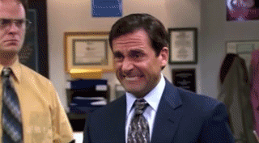

While waiting for his audition for the show, John Krasinski accidentally told Greg Daniels, the creator of the show, that he hoped that the Americans wouldn't mess up the British version. (YIKES!)
The show was almost cancelled after the first season because of bad ratings, but was saved after Steve Carrell starred in the movie "40 Year-Old Virgin."